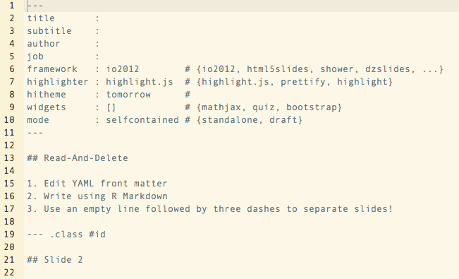
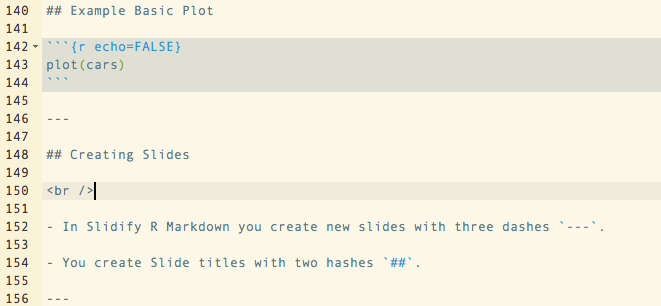

This Weeks Goal's
Slidify HTML Slideshows
Christopher Gandrud
Yonsei University
This Weeks Goal's
Slidify HTML Slideshows
Finish analysis
Write up results (paper + presentation)
Next Tuesday (18 December 2012) from 17:00 to 18:15 you will present your research.
The presentations should be about 10 minutes long.
The structure should be similar to the structure in your data.
You can create a reproducible presentation in R.
To do this use Ramnath Vaidyanathan's Slidify package.
Slidify lets you write in R Markdown and create HTML presentations.
You can host the presentations from Dropbox.
This allows you to include interactive visualizations in your presentation. Especially visualizations made with the GoogleVis package.
First download Slidify:
# Load devtools
library(devtools)
# Install Slidify and ancillary libraries
install_github("slidify", "ramnathv")
install_github("slidifyLibraries", "ramnathv")
Change your working directory to where you want to save the presentation:
setwd("DIRECTORY")
Then create a new slideshow with the author command:
author("NewSlideShow")
Open the file called index.Rmd and change the heading.

The index.html file that Slidify creates from index.Rmd will be your final slideshow.
Slidify .Rmd files work almost exactly the same as the regular .Rmd files you are use to.
For example, to create a basic plot with cars data:
```r
plot(cars)
```

In Slidify R Markdown you create new slides with three dashes ---.
You create Slide titles with two hashes ##.

To compile Slidify R Markdown documents (turn them into HTML slideshows) can use the slidify command on your index.Rmd file:
slidify("index.Rmd")
Make sure that index.Rmd is in your working directory.
In RStudio you can click the knit HTML button.
The RStudio preview doesn't really work that well, but opening the index.html file in your web browser works perfectly.
You can publish your slideshow in a number of ways. Dropbox is one easy option.
To publish your slideshow from your Dropbox Public folder like this:
publish("NewSlideShow", host = "dropbox")
Then copy the publc link to the index.html file.
You can use the link to access the slideshow from any computer connected to the internet.